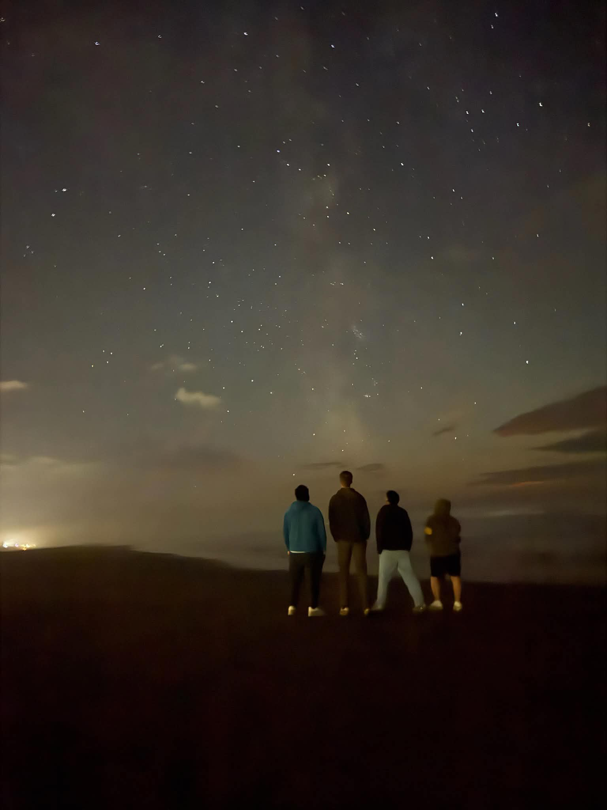
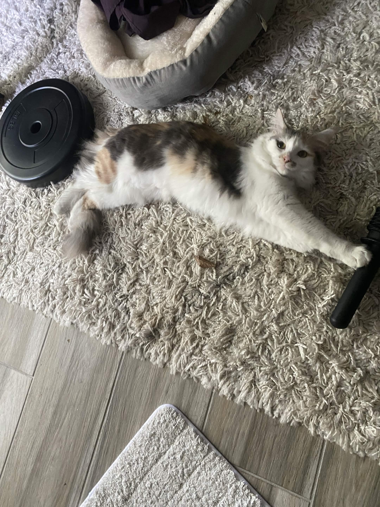
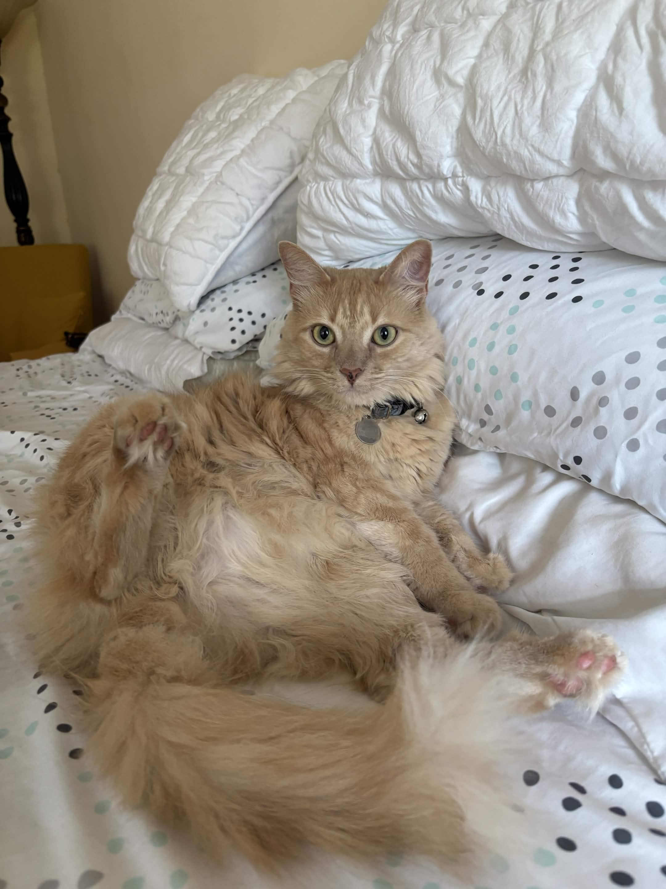

print('Hello World!')
I’m Karim Elgendi, a Senior Computer Science student with a strong passion for problem-solving, building efficient solutions, and collaborating on creative technical ideas. My main technical experience includes Java, SQL, Linux, and full-stack development, but I’m always looking for new areas to explore and improve in. Recently, I’ve developed a growing interest in low-level programming, embedded systems, hardware performance, and system design, which has pushed me to start learning more about C++ and the traditional embedded systems engineering roadmap. I enjoy the process of taking an idea from concept to implementation, whether that means designing a clean user interface, building out back-end logic, working with databases, or experimenting with hardware-focused projects.
Outside of school and programming, I try to keep a healthy balance between my personal interests and long-term goals. I enjoy playing video games on my computer with friends, going to the gym for lifting sessions, and driving out to play pickup basketball whenever I get the chance. I also value spending time with my family, especially during stressful parts of the semester, because it helps me stay grounded and motivated. On top of that, I have two amazing cats, Halo and Mochi, who have completely opposite personalities. They are basically like yin and yang, and somehow, they have made me feel like the side character in their story.
I’m currently focused on sharpening my skills through personal projects, hackathons, college coursework, networking opportunities, and hands-on learning. Right now, my main projects include this portfolio website, where I’m combining design and functionality to showcase my growth as a developer, and a future microcontroller project inspired by my recent interest in embedded systems. I use GitHub to document my progress, share my work, and continue building a transparent record of my development journey. Overall, I’m motivated by the balance between creative thinking and deep technical work, and I’m excited to keep growing as a developer. Thanks for visiting my site, and I hope you enjoy exploring my creative showcase! If you would like to learn more about my background, projects, or technical experience, feel free to reach out through the Contact button or scroll to the bottom of any page to connect with me.



Becoming a 'Polished Programmer'
I’m constantly working toward becoming a more complete and confident developer. That could mean going beyond simply making code work...it means learning how to write cleaner solutions, think through design decisions, document my process, and build projects that others can understand, use, and improve. Every opportunity allows me to sharpen my problem-solving skills and grow into the kind of programmer I want to become for the betterment of society.